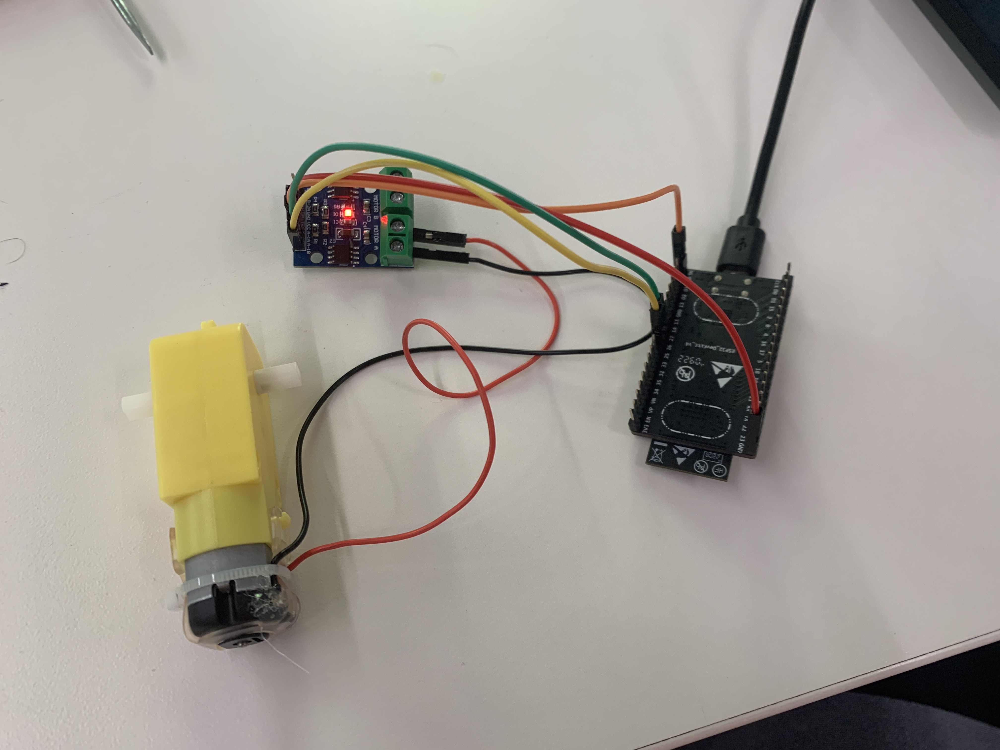

### Week 9: WiFi, Bluetooth, and Radio
<br>
<p style="color:rgb(48, 48, 255)"><font size="+2">For this week's assignment, we were tasked with controlling a board from a local wireless network. In my case, I used a regular ESP32 provided in the lab in order to rotate a DC motor. Using the L9110 motor driver, I connected my DC motor to my ESP32 and chose some pins to connect the information between my ESP and the DC motor. Here is my wiring: </font></p>
<br>
<style>
.center {
display: block;
margin-left: auto;
margin-right: auto;
width: 50%;
}
</style>

<br>
<br>
<p style="color:rgb(48, 48, 255)"><font size="+2">After I wired everything up (using the provided L9110 guide for wiring), I had to tackle my most difficult task: coding. As I have said before, I am not an experienced coder by any means, and I virtually have no background in coding. Despite this, I am not only satisfied but also happy with my "mish-mash" of code that I created in Wednesday's lab. First, I started with the code provided by the SimpleWifiServer example given by the tutorial. Afterwards, I removed the ending section of code which terminated the connection, as it would not work otherwise. I also swapped out the LED commands with the settings of the motor, telling the motor to turn on whenever it got /H from the GET requests and turn off whenever it received /L from the GET requests. While this is simple code in hindsight, putting the two together took a lot longer than I anticipated. Here is my code, as well as a video of the code in action:</font></p>
<pre><code>
#include <WiFi.h>
const char* ssid = "MAKERSPACE";
const char* password = "12345678";
const int A1A = 27; // define pin 3 for A-1A
const int A1B = 26; // define pin 4 for A-1B
WiFiServer server(80);
void setup()
{
pinMode(A1A, OUTPUT); // specify these pins as outputs
pinMode(A1B, OUTPUT);
digitalWrite(A1A, LOW); // start with the motors off
digitalWrite(A1B, LOW);
Serial.begin(115200);
delay(10);
// We start by connecting to a WiFi network
Serial.println();
Serial.println();
Serial.print("Connecting to ");
Serial.println(ssid);
WiFi.begin(ssid, password);
while (WiFi.status() != WL_CONNECTED) {
delay(500);
Serial.print(".");
}
Serial.println("");
Serial.println("WiFi connected.");
Serial.println("IP address: ");
Serial.println(WiFi.localIP());
server.begin();
}
int value = 0;
void loop(){
WiFiClient client = server.available(); // listen for incoming clients
if (client) { // if you get a client,
Serial.println("New Client."); // print a message out the serial port
String currentLine = ""; // make a String to hold incoming data from the client
while (client.connected()) { // loop while the client's connected
if (client.available()) { // if there's bytes to read from the client,
char c = client.read(); // read a byte, then
Serial.write(c); // print it out the serial monitor
if (c == '\n') { // if the byte is a newline character
// if the current line is blank, you got two newline characters in a row.
// that's the end of the client HTTP request, so send a response:
if (currentLine.length() == 0) {
// HTTP headers always start with a response code (e.g. HTTP/1.1 200 OK)
// and a content-type so the client knows what's coming, then a blank line:
client.println("HTTP/1.1 200 OK");
client.println("Content-type:text/html");
client.println();
// the content of the HTTP response follows the header:
client.print("Click <a href=\"/H\">here</a> to turn the motor on.<br>");
client.print("Click <a href=\"/L\">here</a> to turn the motor off.<br>");
// The HTTP response ends with another blank line:
client.println();
// break out of the while loop:
break;
} else { // if you got a newline, then clear currentLine:
currentLine = "";
}
} else if (c != '\r') { // if you got anything else but a carriage return character,
currentLine += c; // add it to the end of the currentLine
}
// Check to see if the client request was "GET /H" or "GET /L":
if (currentLine.endsWith("GET /H")) {
digitalWrite(A1A, HIGH);
digitalWrite(A1B, LOW); // GET /H turns the LED on
}
if (currentLine.endsWith("GET /L")) {
digitalWrite(A1A, LOW); // setting both pins LOW stops the motor
digitalWrite(A1B, LOW); // redundant, but doesn't hurt
}
}
}
}
}
</pre></code>
<style>
.center {
display: block;
margin-left: auto;
margin-right: auto;
width: 50%;
}
</style>
<center>
<video width="400" height="242" controls>
<source src="./vid1.mp4" width="800" height="484" alt="motorwirelessworking" class="center" type="video/mp4">
</center>
<p style="color:black">Return to Main Page <b>[here](../index.html)<b></p>
<br>